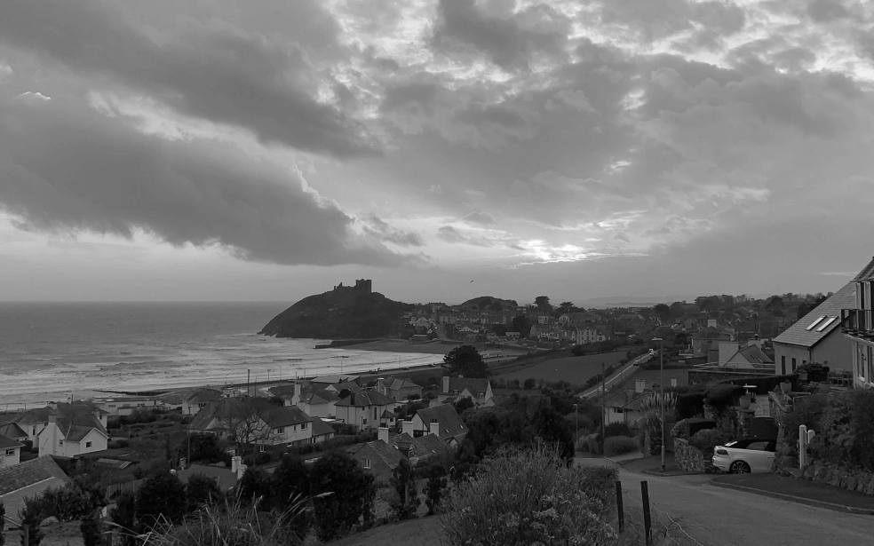
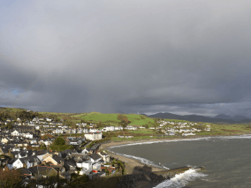
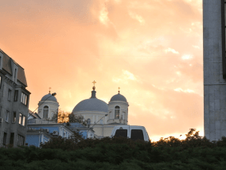
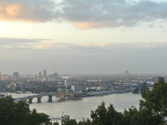
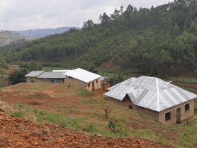
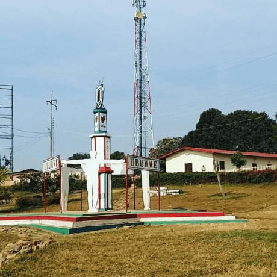
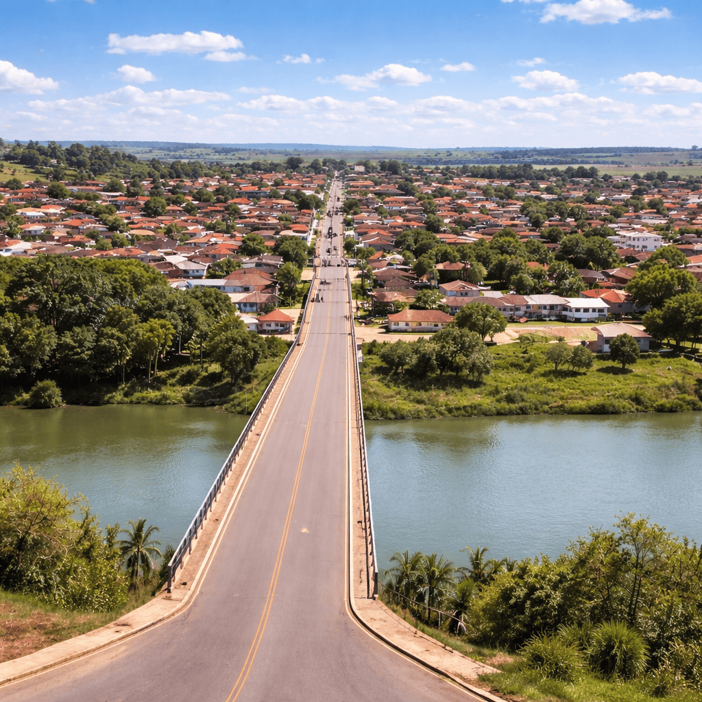

De Pátria para Pátria
Uma jornada épica do Kentucky ao Burundi pelo País de Gales e Ucrânia

Conheça um pouco mais sobre a localização dos seus amigos
Cada pessoa é um artista livre, chamado a transformar as condições, pensamentos e estruturas que moldam nossas vidas.
A cidade de TripleTen reuniu profissionais de diversos cantos do mundo. Hoje, a Galeria de Arte TripleTen tem o orgulho de apresentar histórias e fotos de algumas das pessoas que dedicam seu tempo e esforço para fazer com que os futuros profissionais de tecnologia desta cidade se sintam em casa. Cada um de nós tem uma história única sobre o lugar de onde viemos. Sinta-se à vontade para adicionar sua própria história e uma obra de arte visual dedicada à sua cidade natal à nossa coleção. Não importa de onde você é, estamos felizes por você ser nosso vizinho.







Criccieth, País de Gales
- Artistas
- Steffan Warren, editor-chefe
- Kseniya Glagoleva, gerente de projeto

A ruína medieval do Castelo de Cricieth tem vista para a cidade abaixo de uma rocha que se projeta para o mar. Acredita-se que tenha sido construído por Llewelyn, o Grande, no século XIII, cerca de 900 anos depois, a auto-intitulada Pérola de Gales nas margens de Snowdonia tornou-se um destino turístico popular durante os meses de verão.
A uma curta caminhada da estrada do castelo, você pode desfrutar do melhor sorvete do mundo no Cadwalader's, cujo ingrediente secreto, segundo rumores, são algas marinhas de origem local. Outra reivindicação à fama é o fato de que Criccieth ganhou o prêmio Wales in Bloom por cinco anos consecutivos. Foi também a casa de David Lloyd George, o único galês a ocupar o cargo de primeiro-ministro do Reino Unido.
Berea, EUA
- Artista
- Travis Turner, Autor e Editor
.png)
Berea é uma pequena cidade localizada na parte central do Kentucky. É conhecida por sua forte ligação com as artes e com a educação. A cidade abriga a Berea College, uma instituição que oferece ensino superior gratuito para estudantes com necessidade financeira e que mantém uma tradição de valorização do trabalho manual e da cultura regional.
Além da faculdade, Berea também é reconhecida por sua produção artesanal, especialmente trabalhos em madeira, cerâmica e tecidos. A cidade preserva um ambiente acolhedor e comunitário, sendo um exemplo de como tradição, educação e cultura podem caminhar juntas no desenvolvimento local.
Muramvya, Burundi
- Artista
- Grevisse Kenguruka, Editor técnico

Muramvya é uma das 18 províncias do Burundi e possui grande importância histórica para o país. Foi antiga capital do reino do Burundi e ainda preserva marcos culturais relevantes para a identidade nacional.
O clima é bastante frio em comparação com outras regiões do país, devido à altitude elevada. A região também possui áreas montanhosas e vegetação característica da África Central.
O Parque Nacional de Kibira, localizado próximo à província, é uma das principais áreas de preservação ambiental do Burundi, abrigando diversas espécies da fauna e flora locais.
Caçu
- Artista
- Lorraine De Barros Nunes Borges

A cidade de Caçu, no sudoeste de Goiás, surgiu no final do século XIX com a chegada de famílias pioneiras atraídas pelas terras férteis e pela proximidade do Rio Claro. Entre as famílias fundadoras estão os Borges, Nunes, Silva, Souza e Oliveira, que se dedicaram principalmente à pecuária e à agricultura.
Com o crescimento do povoado, foi construída uma capela, dando início à organização da comunidade. Em 14 de novembro de 1953, Caçu conquistou sua emancipação política e tornou-se município. Sou descendente de uma das famílias fundadoras de Caçu, o que me enche de orgulho por fazer parte da história e do desenvolvimento da cidade desde seus primeiros anos.